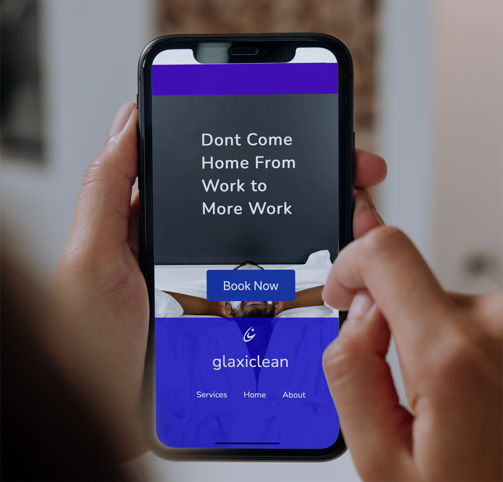
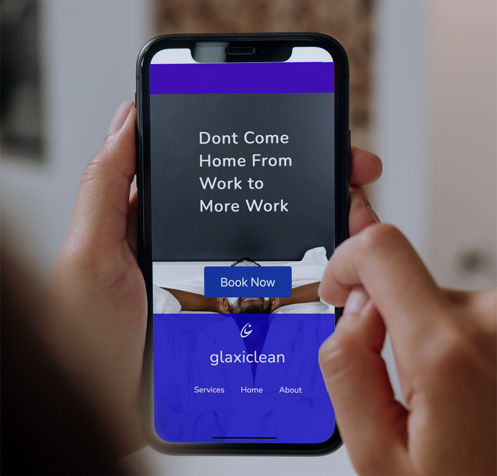

Glaxiclean, a company dedicated to cleaning services, faced significant challenges in its operations. It grappled with consistently low sales figures, a struggle to reach potential clients, and the need to stand out in a crowded home cleaning market. To address these issues effectively, our strategy centered around highlighting Glaxiclean’s commitment to eco-friendly practices, positioning it as a safe and sustainable alternative to conventional cleaning services. Additionally, we dedicated substantial effort to crafting a distinctive brand identity that would set Glaxiclean apart from its competitors.

 
